TON Learn
Telegram Mini App that teaches Web3 basics
A concept for a Telegram Mini App that teaches newcomers the basics of the TON blockchain and keeps their wallets safe.

ヤル・ルチキン
プロダクトデザイナー Product designer
◀ベオグラードBelgrade
東京Tokyo▶
I design marketplaces and travel products used by millions of people, and the design systems that keep them consistent.
Right now I own the home page of Playerok, a marketplace for in-game items with 4M+ users. Before that I designed for Rail Ninja and its sister products: a multi-brand design system and Travel Ninja, a hotel booking service built from scratch.
My background is in advertising and intercultural communication. Most products I’ve worked on are used by people from many countries, often in a language that isn’t their own.
Products I designed in production teams, from a marketplace to train and hotel booking.
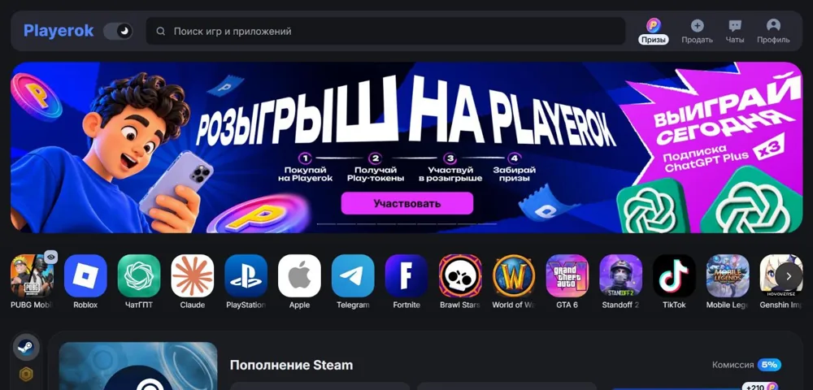
The home page, seller landing and game pages of a C2C marketplace for in-game items, accounts and top-ups with 4M+ users.

One multi-brand component library behind Rail Ninja, Firebird Tours, Triptile and highspeedtrains.com.

Search, timetables, seat choice and checkout for a train ticket platform handling over 1M tickets a year.

A new hotel booking service for the Rail Ninja family: from search and the hotel page to choosing a room and paying.

Consumer website and apps for booking tours, plus AGORA, the internal tool travel agents work in every day.
Self-initiated work, made quickly to try domains I hadn’t worked in. None of these are client projects.
Telegram Mini App that teaches Web3 basics
A concept for a Telegram Mini App that teaches newcomers the basics of the TON blockchain and keeps their wallets safe.
Website for a premium real estate developer in Belgrade
A dark, quiet site where the properties do the talking: a curated portfolio, the services behind each sale, and a refurbishment case told in numbers. I wanted to see how far restraint can go on a page that sells million-euro flats.
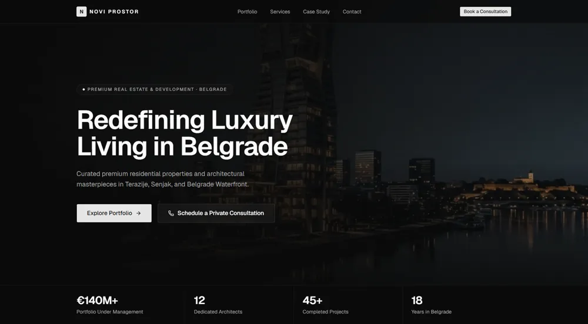
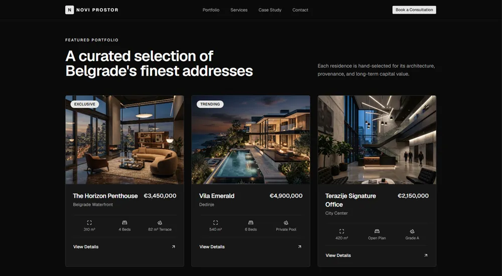
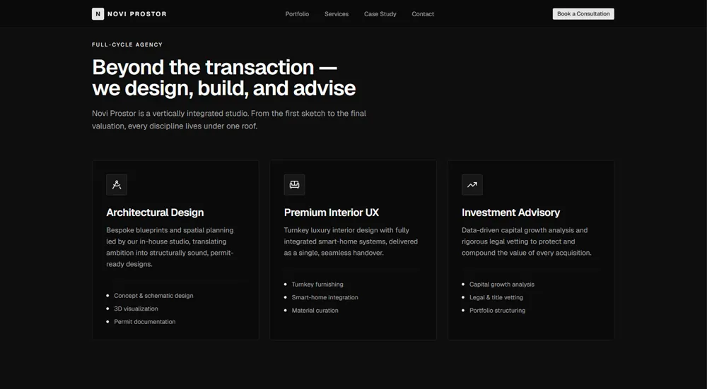
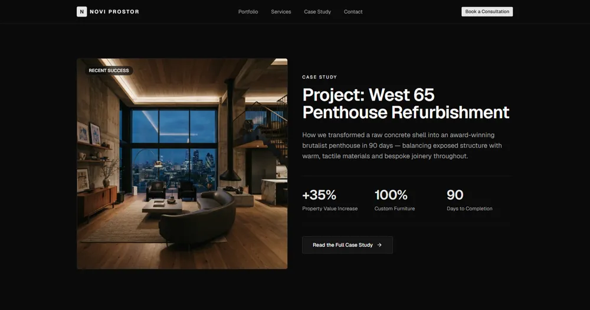
Brand identity for a speciality coffee roaster
Logo, colour, type and packaging for an imaginary Belgrade roaster. The system pairs a classic serif with a technical mono, so the same brand can feel warm on a cup and precise on a roast label.
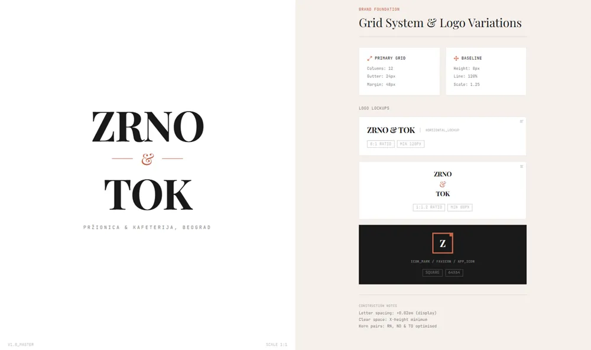
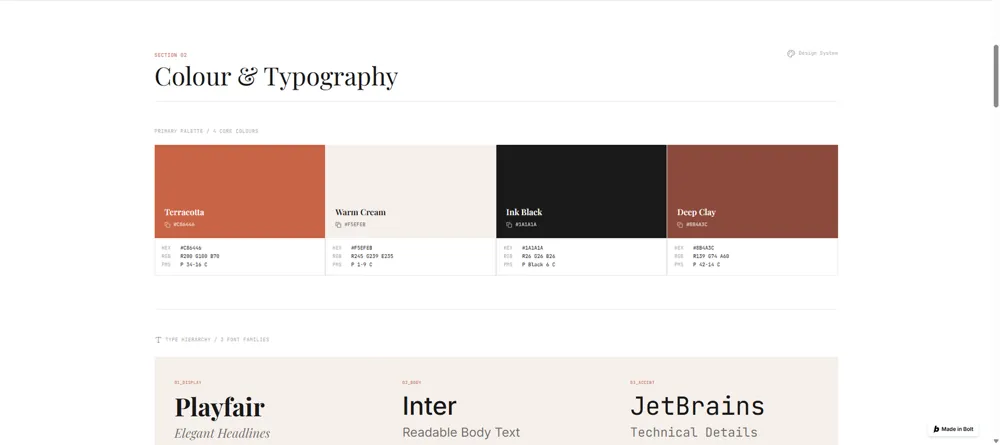
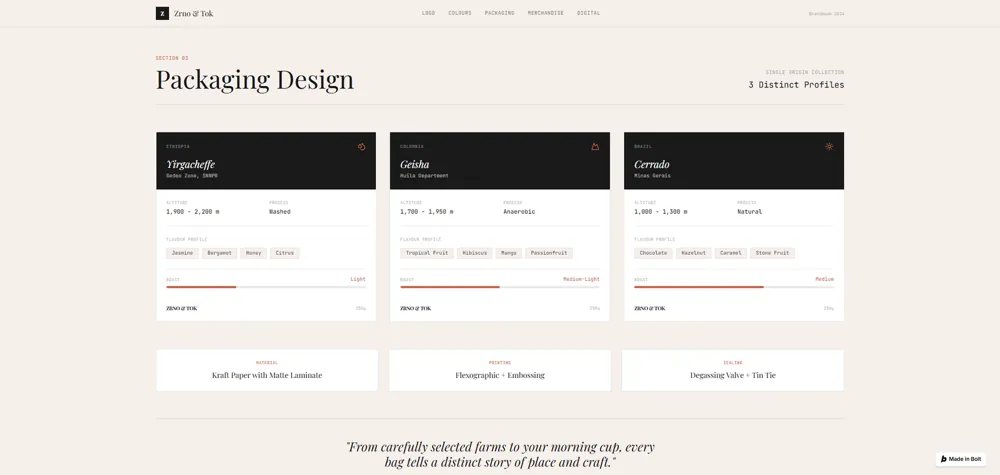
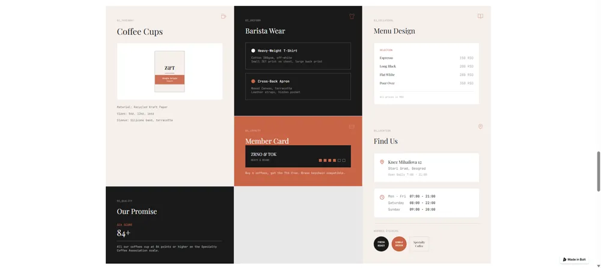
Landing page for a logistics SaaS
A B2B landing page for fleet dispatch software in the Balkans. The challenge was to explain a dense product without a wall of features: one metric dashboard, one dispatch view, and every claim tied to a screen.
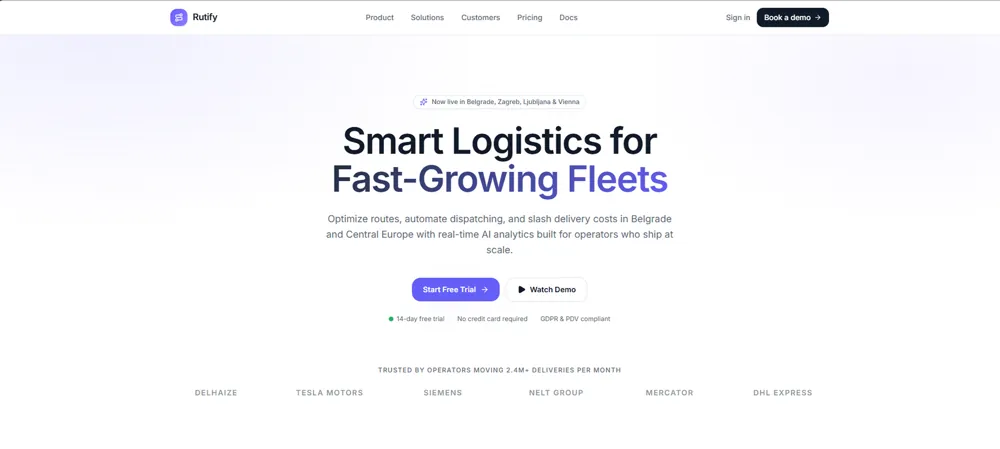
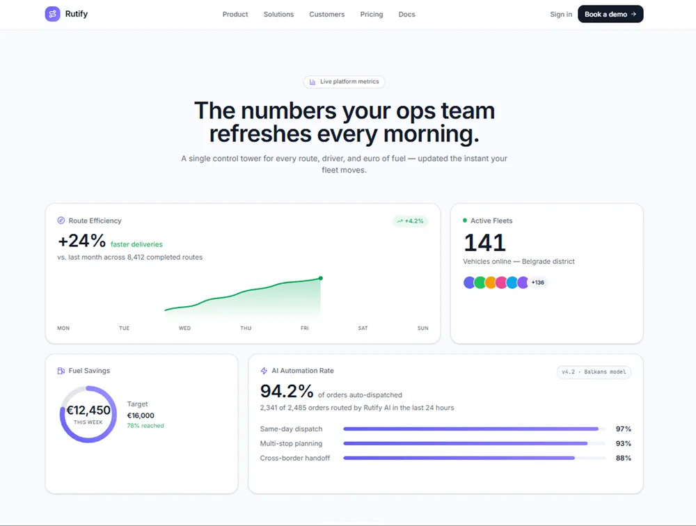
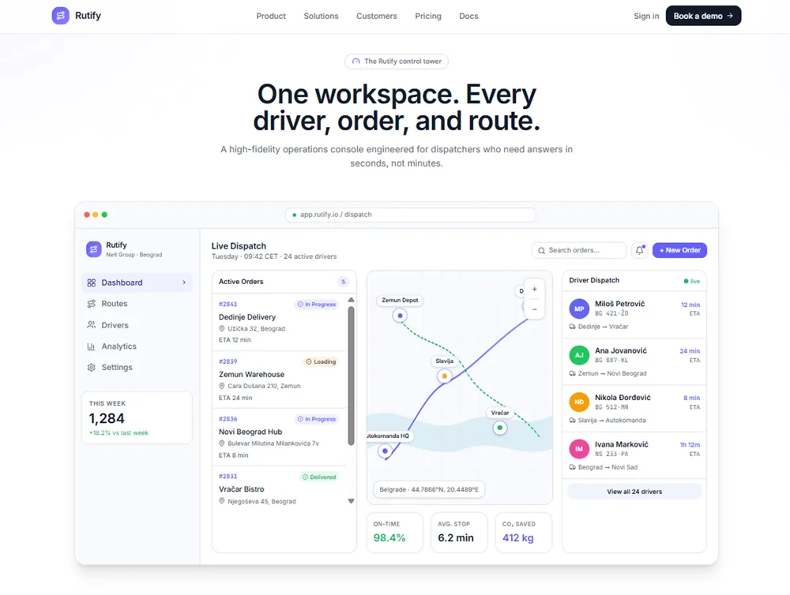
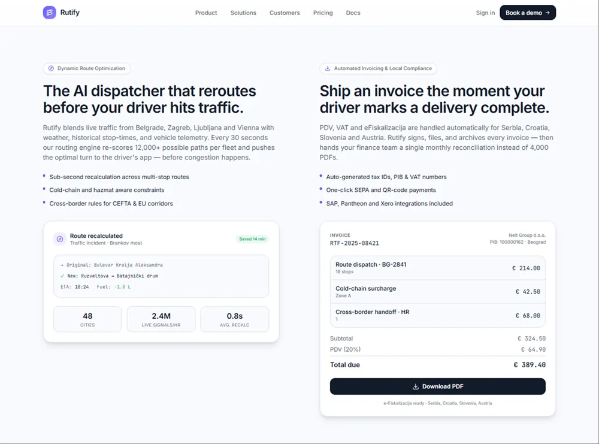
I speak at Galary Design, a Tokyo community of about 660 UX/UI designers.
Hands-on workshop: we built a small design system in Figma together, from foundations to the first documented components. Online, in English, with Japanese where it helped participants.
What separates a UI kit from a design system, why teams need one, and how to start. Online, in English, with Japanese where it helped participants.
My bachelor’s research at HSE University, written in English: how digital artists build an audience and sell their work online.
Five years, from communications to product design.
Product designer, contract, remote
C2C marketplace for in-game items and top-ups with 4M+ users. I own the home page and work on the seller landing and game pages with the PMs and the design lead.
Product designer, led design for the tours line
Travel-tech group behind Rail Ninja, Travel Ninja, Triptile and highspeedtrains.com. Built the multi-brand design system and the Travel Ninja hotel booking service; guided one junior designer. Hybrid, Belgrade.
Senior project lead, then deputy director
Communications agency in Moscow. Ran Design Factory 2.0, a national design competition, and led social media rebrands for federal and city public-sector clients.
In-house designer
HR and staffing company. Ads, landing pages, branding and merch; also ran ad campaigns and worked with print vendors.
Freelance designer
Presentations and social media visuals for brands like Realme, SIBUR and EuroChem.
PR and localization, project contract
Adapted English press kits for game launches by EA and Garena for the Russian-speaking market.

I started in PR and advertising, localizing game launches and running campaigns, and moved into design through agency work. That path shows in how I work: I care about who reads the screen, in which language, and what they need to decide.
In product teams I usually sit between design and engineering. I like turning a messy set of screens into a system that a team can grow without me.
I’ve been to Japan twice, the first time in 2018 for a month of Japanese classes in Tokyo, and I’m still learning. I work in English and Figma, and I’m comfortable with ProtoPie, Framer and Adobe tools.